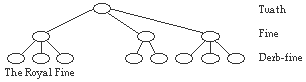
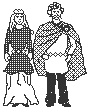
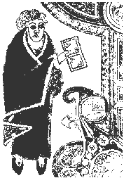
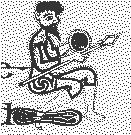
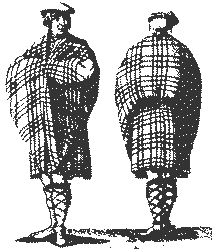

The study of the social institutions and moral values of a culture is intertwined with the study of the culture as a whole. It is in fact by studying the mythology, art, language, literature and archaeological remains of a culture that we may shed light on its social conventions, especially if there are no written histories.
We must sometimes look to unusual places to recover ancient Celtic traditions. For example, if Christian church records indicate a particular practice was forbidden and evil, we might deduce that the Church was attempting to quell a pre-Christian religious tradition.
Christian monks also recorded a number of tracts dealing with law, history and religion. From these bits of information we can piece together some of the essential characteristics of Celtic customs and ways of life.
Irish society was structured hierarchically from the individual to the Ard Rí [I], or High King, usually around blood ties. People were either nobles, free commoners or slaves, although it should be noted that there was room for social mobility in this system.
The smallest unit was the derb-fine, whose members shared a common great- grandfather, extending to second cousins in the male line. The derb-fine was mostly significant for purposes of inheritance and familial obligations. The fine ("kin") was the smallest political unit, consisting of an extended family. Land was owned not by people or even household heads, but by fine.
Fine were grouped along natural geographical boundaries into tuath, a word that originally meant "people" but which later picked up territorial connotations. [36]

A rig , or king, was elected from a royal fine to preside over the tuath. This position often went from father to son, but this was not always the case. The king's role within the tuath was essentially advisory. Most of his responsibilities concerned external affairs, including making treaties, paying tributes to over-kings, solving territorial disputes and raiding borders to forcibly collect unrelinquished payments.
The tuath had a popular assembly called the oenach. The king presided over the oenach, which dealt with the political, administrative and judicial decisions regarding the tuath. The power of the king, however, was limited and held in check by the vote of the oenach, who could vote to dispose of and replace the king.
Ireland was split into five to seven (depending on the time period) kingdoms, each of which consisted of a number of tuath. Each of these kingdoms had a king. Above these all was the Ard-Ri of Ireland.
A fundamental concept of ancient Irish law is that of "honor price," which was used to determine compensation in legal matters. For example, a murderer would have to compensate the family of the victim.
A person's honor price was directly related to his importance and position in the tuath, and was sometimes affected by blood relations. For example, a child's honor price was equal to half of his father's. Since social mobility was possible, a person's honor price would increase or decrease with their social status, which was generally tied to their wealth but could also be affected by the quality of their actions. For example, a kin-murderer would lose status.
Honor price was measured in currency, and fines (called eric) in a legal dispute would be determined using a complex set of rules accounting for the relative honor prices of the people involved.
The Irish concept of honor price is nearly identical that of the Anglo-Saxon and Viking wergild.
There were very few crimes against the state, and with few exceptions no punishment was given for such crimes. Most recognised offences were crimes against individuals.
A class of legal specialists, called brithemain, acted as judges, counsellors and lawyers. If a person did not accept the judgement of a brithem, they could lose considerable honor price, and even be ostracised by the tuath and become an outlaw.
An outlaw was literally outside the protection of the law. They had no legal recourse for damages or injury, and would be an easy target for victimisation. Thus there were great social pressures to respect and uphold the law.
The vast majority of disputes were settled by compensation, which could take the form of material goods or currency, or even action. For example, if a person was found guilty of injuring someone, they would be required to nurse them back to health, perhaps with specific requirements, such as feeding the victim a special diet or providing them a noise-free environment. However, currency was usually a component of all settlements. [56]
The contract was a very important legal entity in ancient Irish law. Business and political relations, and even marriages, were based on contracts, which explicitly stated the relationship and expectations of the parties involved.
The Senchas Mar ("Ancient Laws of Ireland") states the legal binding nature of a contract:
'Every contract made without deceit is binding; for either of the two parties can dissolve the bad contracts of the other; they cannot dissolve their good contracts… if every arrangement be made for mutual convenience, conscientiously, without deception or dispute.'
Like other personal and business relations, marriages were mutually accepted partnerships bound by a renewable contract which specified the duration of the marriage. There were seven types of marriages in ancient Ireland, from long-term marriages to short-term marriages and concubinage. Although concubinage was legal, it was frowned upon and not common, especially since concubines enjoyed fewer legal privileges than did first wives. [56]
Women could own property, and the dominant person in the marriage was the partner who owned the most, regardless of gender. If both husband and wife contributed equally to the marriage, they have equal financial control of their property. [56]
The wife also had the right to prevent her husband from entering into contracts, implying that she was an equally important party in the negotiation, as this excerpt from The Ancient Laws of Ireland illustrates:
'If she be a woman of first lawful marriage [the primary wife], of equal property and equal family [equal property implies equal family], she can disturb all his contracts if they be ill-advised, for legality cannot attach to fraud which is opposed; her sons may dissolve them.'
Ancient Irish law allowed for dissolution of marriage and divorce. If both partners agreed that the marriage should be dissolved and their marriage contract made void, then property was reapportioned to them according to their original contributions and to how much of the other's wealth they had consumed. [56]
Either partner could petition for a divorce if the other partner wasn't living up to the obligations of the marriage. A woman was expected, among other things, to be a prudent, respectful, faithful and willing worker and lover. A man was expected to be respectful, prudent and a good worker and lover as well. [56]
Most of what we know about ancient British law and social structure comes from bardic poetry, which unfortunately give us little detailed information. From it we know more about the Britons of southern Scotland than about the other Celtic peoples of Britain. Still, we can make some observations and guesses about ancient British law and society by reading later written records, and with the help of the well-preserved and detailed ancient Irish laws.
It is interesting that, despite changes and adaptations over time, the Welsh Laws have an older substratum which becomes visible when juxtaposed with ancient Irish Law. All of the basic legal terms are Welsh in origin, demonstrating, some say, the superficial Romanisation of the British tribes. [11]
The most important universal institution in Celtic society was kingship, although the specific manner of choosing the king differed in different societies. In theory, in all Celtic lands the kingship was open to every adult male in the royal family whose great-grandfather (or closer ancestor) had been king. [11]
The social situation in Wales was much like that in Ireland. There were two classes of people, the free tribespeople (known by various names such as uchelwyr, breyr and innate boneddig) and the unfree population (known as taeog, aillt, or alltud). One had to be born into the free tribespeople to be counted among the cenedl ("kindred group"). The unfree class did not have the rights and responsibilities of the cenedl and did most of the agricultural work. Below the unfree class was a class of slaves, who did most of the hard manual labour. [11]
The cenedl was like the Scottish clan of the late middle ages, descended from a common ancestor, up to the ninth degree. The cenedl was presided over by the pencendel ("kindred head"). The entire group acted as if it were an individual: a crime committed against one of its members was a crime against the kin as a whole. Each member was given an amount of responsibility according to his position within the "nine degrees" of kinship. Likewise, a crime committed by one member must be amended by the entire cenedl, according to a similar scale. [11]
In Wales, the groupings of people for legal and administrative purposes were the tref, the cymwyd and the cantref, in increasing size. [11]
The tref (which originally meant "house") was the smallest unit, and was the property of a single family. Free landowners lived not in villages but in isolated homes at a distance from one another, a common element of pastoral communities. [11]
A cymwyd, which grouped together a large number of trefs for administrative purposes, perhaps at a relatively late date. [11]
Groups of two, three or four cymwyds formed a cantref ("hundred tref"), the political unit which survived until recent times and seems to recede into antiquity as well.
The unfree population had a different organization. A tyddyn was a tiny hamlet consisting of a farm, the cottages of the farm labourers and a church. [11]
Groups of four tyddyn formed a taeogtref, a village community of the unfree population who shared joint responsibility for farming and who had certain privileges in common. [11]
Ancient Irish law, embodied in Senchas Mor, has explicit guidelines for the treatment of women, including the employment of women. Although a woman typically worked at home, she was paid for her labour. This included domestic chores such as kneading and nursing, as well as farm work.
Women weren't restricted to domesticity, however. Some of the most renowned Irish lawmakers, for example, were women, which might help to explain the many explicit rights for women in Irish law. One such law stipulates that if a women did her full work, she "obtained the value of the full work of the man."
Celtic myths are full of strong female characters who play an active, central role in the story, be it as goddess, queen, warrior, wife or druidess. This reflects the Celtic respect for the female.
Female warriors were not uncommon in Celtic society. A sixth century proclamation by St. Adamnan outlawed the previous Celtic requirement that women who immigrated became warriors in battle. [26]
Male warriors in many myths were trained by a woman warrior, as in the case of Scathcath's training of Cuchulainn or Fionn's training by two women-warriors and a druidess. [26]
There are also historical cases of female warriors, such as Queen Boudicca, who lead an armed revolt against the Romans. [42]
Fosterage of children was a standard practice among Celtic tribes. In this practice, young children would be given to foster parents to be trained and raised. The original parents would pay the foster parents, who were usually of a higher rank (at least in Ireland) for the care and instruction of the child. [36]
Females would typically return home at fourteen, "the age of choice," when they were considered old enough to marry. Males would typically return at the age of seventeen, when they had reached manhood and were ready to bear arms in battle. [36]
It has been noted that this system of fosterage does much to improve relations between tribes. Not only would warriors be less willing to attack a tribe fostering their children, but they also may have formed personal bonds with members of that tribe during childhood. [26]
The earliest account of Celtic dress and appearance is from Polybius in 225 B.C.E. The Celtic tribes of Northern Italy, the Insubres and Boii, wore bracae [C] ("breeches") and light cloaks. The Gaesatae, fierce Celtic fighters from beyond the Alps, paraded naked at the forefront of the battleline, wearing nothing but gold torcs and armlets.
The Roman historian Strabo describes bracae as tight fitting, but it seems that looser breeches were also worn in Gaul. Men wearing tight-fitting breeches are depicted on a number of Celtic artifacts, such as the Gundestrup Cauldron. [36]
Another Roman writer, Polybius, mentions a warrior from the Ludovsis tribe with a light cloak, and Diodorus describes coloured cloaks fastened with a brooch, dyed and embroidered shirts, and belts with silver or gold ornaments.

According to Strabo, the shirts were slit and had sleeves. [36]
Women's clothing consisted of an ankle-length undertunic and a sleeved overtunic, which fell to the thighs. Like the men, they wore cloaks and metal-decorated belts.
The ancient Celts had a unique hair style which attracted the attention of many Classical authors.
According to Diodorus of Sicily, the Celts were "tall and muscular, with pale skin and blond hair which they highlight artificially by washing it in lime-water; they gather it back from the forehead to the top of the head and down to the nape of the neck… and therefore the hair becomes so heavy and coarse that it looks like the mane of horses. Some of them shave the beard, both others let it grow a little; and nobles shave their cheeks, but they let the mustache grow until it covers the mouth."
Caesar noted that the Celts wore their hair long, but shaved their bodies except for the head and upper lip.
Irish texts refer to hair so long and stiff that it would have impaled a falling apple. The Irish hero CuChulainn is described this way, and it is added that his hair was of three colours, darkest near the scalp and lightest at the end. Such an effect could have been caused by bleaching. [36]
The ancient Celts were a very colourful people, fond of personal ornamentation and flamboyant dress.
Stripes and checkers of many colours were common in Celtic fabrics, according to the Classical writers, and gold thread was used to embellish the garments. The checkered patterns probably were the forerunners of the Scottish tartan, although the earlier weaves probably resulted from whatever assorted yarns the local weaver had on hand, rather than from a desire to form a particular colour pattern.
Colour also figured prominently in Celtic jewelery. Red enamel and coral beads were commonly affixed to Celtic metalwork to provide a bit of colour on an otherwise single-hued surface [14].
The affinity for decorative colour was also expressed on the body itself. Caesar wrote that the Celts painted themselves with woad, a blue pigment derived from a herb found in the north, in order to appear more terrifying in battle. Patterned and animal tatoos were also used, according to a third century C.E. account by Herodian.
Strabo testifies that the Celts had a "fondness for ornaments; for they not only wear golden ornaments — both chains around their necks and bracelets around their arms and wrists…"
The use of the torc was widespread in the Celtic lands, and is seen on several surviving statues of Celts, including the "Dying Gaul."
Bronze fibulae [L], a type of brooch closely resembling the modern safety pin, first appeared in Celtic Europe in the Urnfield era (circa 900 B.C.E.). The Early La Téne Celts wore fibulae which depicted stylised humans and birds along the length. Brooches were ornamented with coral, and later with enamel work. [36]
The Celts also developed pins similar to four-inch-long straight pins, with highly decorated heads. Another type of brooch, the penannular, consisted of a broken circle and pin. Here, too, the Celtic metalsmiths found room for ornamentation, and the terminals were cast in the shape of animal heads [14].
In insular Ireland, brooches became increasingly ornamental. Magnificent pieces such as the Tara Brooch were often worn to flaunt the wealth of the owner.

There were two primary types of dress in Early Christian Ireland that were worn at least up until the Norman invasion in 1167 CE. [27] The brat and léine [I], shown here in an illustration from the Book of Kells, was primarily a garment of the upper class. The brat was a four-cornered, woolen cloak of a bright colour, commonly purple or green, and was frequently trimmed with a different coloured fringe. [27]
The léine was a rather tight-fitting undertunic, often embroidered around the base of the skirt. Usually made of linen (although the very wealthy may have had silk), the léine was either of natural colour or dyed yellow with saffron. Old Irish texts refer to the léine as being gel [I], or bright in colour. [27]
Both men and women are believed to have worn the brat and léine. Women wore the léine long to the ankles, but men may have had a shortened version or hitched it up around the waist when necessary. [27]

The other native type of Irish dress was the jacket and trews, worn by this warrior in the Book of Kells. This type of clothing was worn by the lower classes, particularly those who had to engage in physical work. [27] It would obviously have allowed much freer movement than the brat and léine.
The trews, or pants, were tight fitting, and came either to just below the knee or to the ankle. They were probably made of wool. [27] Similar pants are depicted in earlier Celtic art such the Gundestrup Cauldron, suggesting that they also worn on the continent.
Not much is known about the jacket, and its details are unclear.
During the later middle ages, the Irish began to adopt styles of clothing more similar to the English: tunics, dresses, doublets. However, the Irish varieties were generally simpler than their English counterparts. [27]

The national dress of Scotland is, of course, the kilt. But the kilt did not exist in today's skirt-like form until the 18th century.
The original Scottish dress, the saffron shirt, was a wrapped garment and derived its name from yellow-gold saffron dye. A writer of the time claimed it required 24 yards of material to make a saffron shirt, but his statements should be viewed in light of the fact that fabric was then woven only about two feet wide. [27]
The kilt came to Scotland in the 16th or 17th century in the form of the great kilt. This all-purpose garment consisted of an 18 foot piece of tartan, which the wearer laid down on the ground and pleated until its width was only 4 feet. He then laid down on top of it, and belted the middle of the fabric around his waist. The bottom half became a skirt, and the top half he could wear crossed over the shoulder or as a cape. At night, he could use the kilt for a blanket.[27]
Little is known about the women's dress. It was probably similar to that of Ireland in early times, since the Irish settled in Scotland. A later form of dress, the rough female equivalent of the kilt, was the arisad [S], which was a length of a finer plaid that reached from neck to heels and was fastened at the breast with a brooch.
Today in Scotland and at Scottish festivals the world over, Scots wear their clan tartans proudly. The specific pattern, or sett, indicates membership in a particular clan, and some clans have different tartans for hunting, everyday use, and formal wear.
But, contrary to popular belief, this system of clan tartans does not date back to the clans of pre- English, medieval Scotland. Although the highlanders did wear plaids, members of a given clan commonly wore different patterns. As a matter of coincidence, a clan may have worn the same pattern, just because they all purchased cloth from the same bolt or the same weaver [27].
The clan tartan system of today is the fabrication of the 19th century romantics, who made up evidence that tartans were used for identification by the ancient Celts. These same romantics also assigned family names, apparently at random, into certain clans. Therefore, a given tartan may be legitimately worn by anyone [27]